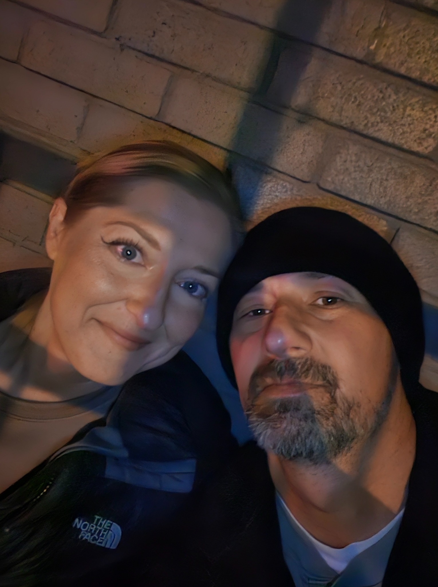

A Letter From My Heart
Some words are meant for just one person.
Hint: Three words I say to you every day.One Last Thing, Stephanie... ♥
Before this last song ends, there's something else I want you to know.
When I think about this past year, I remember so many things. The excitement of meeting you. Those few precious hours we managed to steal together in Dallas. The miles between Frost and Sweetwater. The happiness of finally having a place to call ours.
I remember laughing with you, holding you, waking up beside you, and feeling something I hadn't felt in a very long time.
I also remember the things I wish I'd done differently.
I was scared sometimes, Stephanie. Scared that I wasn't enough. Scared of losing you. Scared of opening up about things I didn't know how to explain.
And instead of talking to you, I kept too much inside.
I understand now that silence doesn't protect a relationship. Sometimes it slowly hurts the very thing you're trying so desperately to hold on to.
I made mistakes. I know that. And I know that saying I'm sorry doesn't automatically make everything better.
What matters is what I do differently going forward.
I want to listen more. I want to understand you better, including the things you experience that I may never fully understand myself. I want to be someone you can talk to about anything, even when the conversation is uncomfortable.
And I want to be brave enough to do the same.
I'm proud of you, Stephanie. Proud of the courage you've shown and the work you've been doing for yourself.
I'm working on myself too. Not just because I love you, but because I know I need to become a healthier, happier, more honest person.
I hope we get the opportunity to continue our story together. I really do.
I still believe there's something wonderful between us, something that deserves patience, honesty, and care.
But I don't want this gift to feel like a request for an answer or a promise.
You don't owe me either.
I simply wanted you to know how deeply I love you, how grateful I am that we met, and how much the memories we've made mean to me.
And now, after all these miles and everything we've been through, you're finally heading home.
I hope you can look out the window, listen to these songs, and smile at some of the memories we've made.
I hope you feel peaceful, hopeful, and proud of yourself.
And I hope you know there's someone out here who thinks you're pretty extraordinary.
Welcome home, Stephanie.
I love you. ♥
And whatever road comes next, I hope it's a beautiful one.
With all my love.
